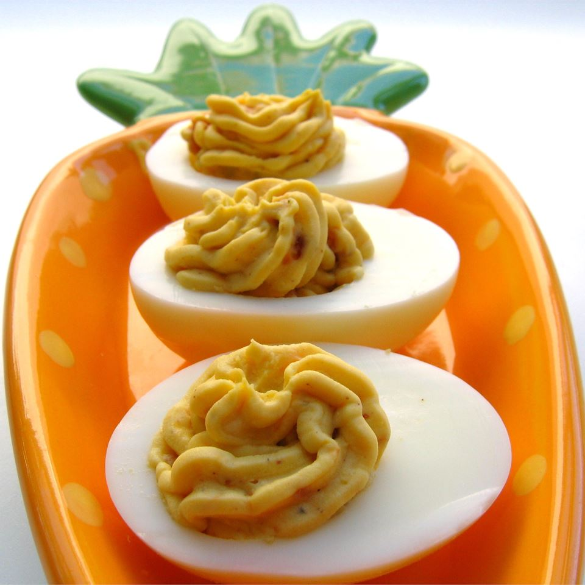

Bacon Cheddar Deviled Eggs

These deviled eggs include bacon and shredded cheddar cheese. Better than your ordinary deviled eggs.
Ingredients
- 12 eggs
- ½ cup mayonnaise
- 4 slices bacon
- 2 tablespoons finely shredded Cheddar cheese
- 1 tablespoon mustard
Directions
- Step 1
- Place eggs in a saucepan, and cover with cold water. Bring water to a boil and immediately remove from heat. Cover, and let eggs stand in hot water for 10 to 12 minutes. Remove from hot water, and cool. To cool more quickly, rinse eggs under cold running water.
- Step 2
- Meanwhile, place bacon in a large, deep skillet. Cook over medium-high heat until evenly brown. Alternatively, wrap bacon in paper towels and cook in the microwave for about 1 minute per slice. Crumble and set aside.
- Step 3
- Peel the hard-cooked eggs, and cut in half lengthwise. Remove yolks to a small bowl. Mash egg yolks with mayonnaise, crumbled bacon and cheese. Stir in mustard. Fill egg white halves with the yolk mixture and refrigerate until serving.